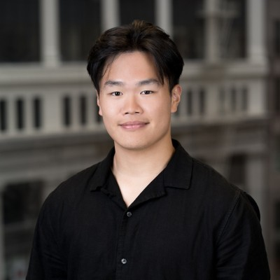
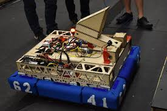
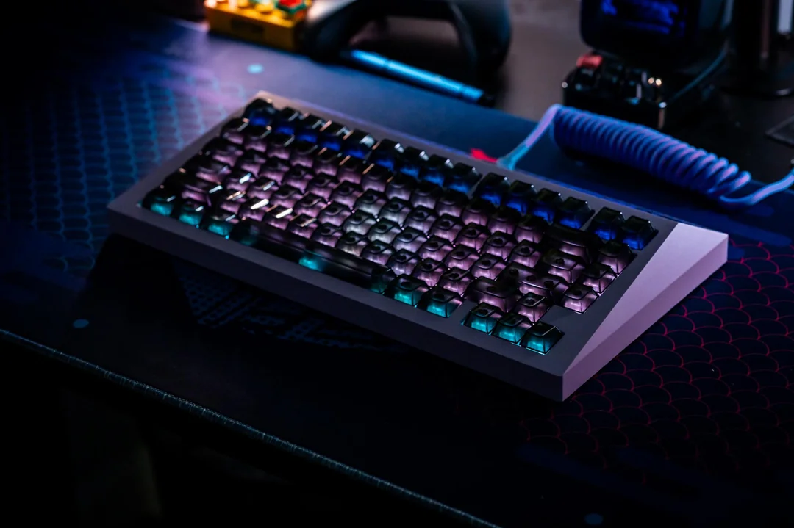
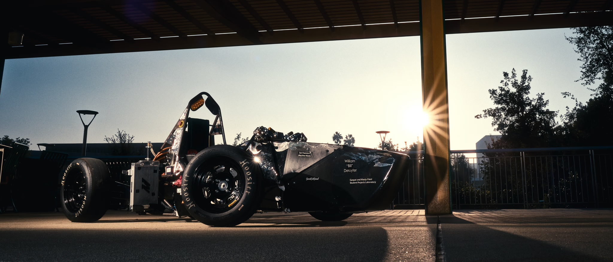
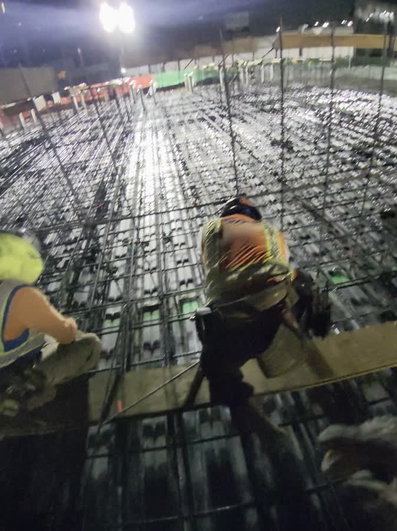

My story
Engineering background
A robot arm. A custom keyboard. An electric race car. A concrete foundation. I’ve always learned by making things.

2018–2021 / FIRST Robotics
FIRST Robotics
Building a robot arm on a multidisciplinary team meant learning to make the design, the materials, and the people work together. Securing grants was part of making the project possible.
Robotics gave me an early reason to connect mechanics, electronics, and code.

The early builds
Custom keyboards
Custom keyboards took me from soldering switches to shipping a finished product. Commissions taught me that the build, the documentation, and the handoff all matter.
That attention to how a person experiences a tool still shapes my software.

2022–2024 / Cal Poly Pomona Formula E
Formula E
As Nuts & Bolts Lead, I led the design of a double wishbone suspension and other mechanical elements for a competition electric vehicle.
A race car made systems thinking concrete: a component only works if it works with everything around it.

2024 / Clune Construction
Clune Construction
My project management internship in San Francisco put RFIs, submittals, estimating, and bid leveling into context. I worked on the Winston & Strawn office remodel and supported estimating for Skadden Palo Alto and US Fertility in Menlo Park.
The question became: how can we make the information easier to use for the people building the project?
2024 onward / Listening to the industry
Construction industry research
I walked active projects including Durango, Resorts World, and Gentle Monster in Las Vegas, and Olympic and Hill in Los Angeles. I consulted with executive leadership at more than 30 general contractors about AI in construction.
Along the way, I managed a $10,000 budget and led a team across logistics, outreach, and software development.
View the site visitsAt K–12 STEM Center USA, I taught robotics, Arduino, coding, and soldering, and built an introductory AI course. Explaining an idea clearly is part of understanding it.
2026 / Webcor Craft
Webcor Craft
Today, I’m a Project Engineer on the Los Angeles Convention Center expansion. I lead foundation and slab-on-metal-deck pours, detail rebar, produce embed shop drawings, and coordinate with trade partners and the design team.
OpenYap grows from that work. I build, use, learn, and build again.
See the field notes See the legacy apps
Outside the jobsite
Education and interests
I graduated from Cal Poly Pomona with a B.S. in Mechanical Engineering in Fall 2025. I’m fluent in Mandarin and English, and conversational in Cantonese.
Off site, I’m usually exploring robotics, applied AI, photography, or drone videography. There’s always another way to look at the world.
Photography archive